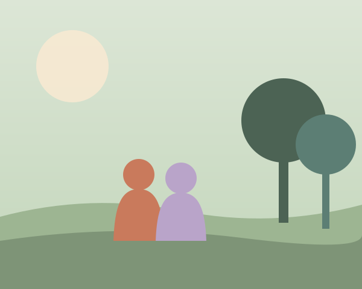

We know "seminar" can sound intimidating. So here's the honest, unglamorous truth of what actually happens — so you can walk in already knowing you're safe.
Unhurried and spacious — long enough to go deep, gentle enough to feel doable.
Small enough that you're a person, not a face in a crowd.
Materials, refreshments and welcoming spaces. Just bring yourself.
Nothing is a surprise. You'll always know what's coming, and you're free to step out and breathe whenever you need.
Arriving
Settle in and get a warm drink. No icebreakers that make you cringe — just a gentle welcome and a chance to land. We share the few simple agreements that make the room safe: confidentiality, kindness, and the freedom to pass.
Connecting
You'll meet your small group — the handful of people you'll move through the sessions with. Before long, the room already feels a little less unfamiliar.
Understanding
Through reflective exercises, journalling and guided conversation, you'll start mapping your own patterns — what drives you, what holds you back, where your confidence quietly leaks away. It's curious and kind, never clinical.
Opening
This is the heart of it. In the safety of your small group, you'll practise saying true things out loud — and discover what it feels like to be met with warmth instead of judgement. We pace this gently. Tears are welcome; so is laughter.
Reflecting
A softer session — music, quiet corners, optional sharing. No phones pinging, no pressure to perform. Many people say this is when the weight really lifts.
Applying
We turn what you've felt into something you can live. You'll leave with practical, psychology-backed tools for confidence, emotions, boundaries and relationships — plus a personal next step that's actually yours.
Closing
A closing circle, a few promises kept, and goodbyes that don't feel like endings. You'll leave with tools, direction, and a group of people who genuinely know you — and who you can lean on long after.

Trust is built as much by what we avoid as what we offer. So, plainly:
What do I bring?
Comfy clothes, a notebook if you like, and an open mind. We provide everything else — and it's all free.
Where are sessions held?
In calm, welcoming spaces that are easy to get to. Full location and travel details are shared once you're in.
Can I come alone?
Most people do — and leave with new friends. You absolutely don't need to know anyone.
Phones?
We invite you to switch off during sessions. There's time and space to check in with home each day.
Dietary & access needs?
Tell us on your form. We'll make sure you're comfortable, fed, and able to take part fully.
What if I feel overwhelmed?
A facilitator is always available for a quiet one-to-one. Stepping out to breathe is never a problem.
Places are small and they fill gently. If these sessions are calling you, give yourself permission to find out.
Save your place